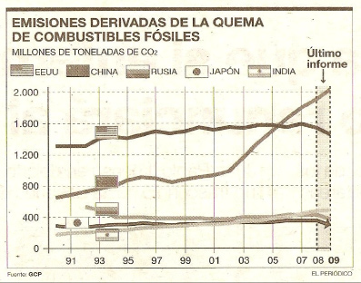

El día 23 de noviembre de 2010, El Periódico de Aragón publicó una noticia, bajo el titular de «China y la India disparan otra vez las emisiones mundiales de CO2», en la que se hacía un análisis de las emisiones de este gas invernadero en distintos países. Para apoyar dicho análisis, la noticia incorporaba la gráfica que se reproduce en la página siguiente.
En esta gráfica nos muestran la evolución, a lo largo de los años, de las emisiones de CO2 a la atmósfera. Cada una de las líneas, en diferentes tonos de gris, corresponde a un país diferente. Al presentarlas juntas, en los mismos ejes, nos aseguramos de que la escala usada en ellos es la misma para todos los casos. Esto es importante porque nos permite comparar los datos de los diferentes países.